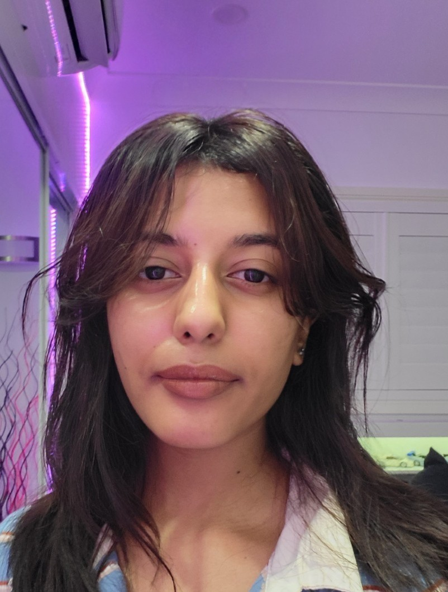

Team Members
Jesse Gonzalez

Arhma Baig

Megha Martin
Sophia Kuhnert
This project showcases the development of an AI agent capable of playing Pac-Man using Deep Q-Networks (DQN). We built an end-to-end DQN agent for Ms. Pac-Man with a custom Gymnasium reward wrapper for pellet bonuses, survival incentives, and motion penalties.
Training runs on eight parallel environments (AsyncVectorEnv) with high-throughput experience replay. Our CNN ingests 84×84 grayscale frames, stacking frames to predict Q-values. Double DQN, epsilon decay, and periodic target updates ensure stable convergence.
Extensive logging captures per-episode reward, moving averages, loss, and mean Q; all visualised in training charts. Checkpoints are saved every 50 episodes, enabling resumable training and hyperparameter tuning.
The following video demonstrates the AI agent playing Pac-Man using reinforcement learning. It showcases the agent's learning progress, strategy, and gameplay behaviour.


The Exploration Rate vs Total Reward scatter plot shows that as ε decays from 1.0 to 0.1, the agent transitions from random play to consistent high scores (600+ points once ε < 0.2). The learning curve (raw and moving-average) over 20,000 episodes shows rapid gains in early episodes and plateaus around ~550 average reward, indicating convergence.
The Episode Length vs Total Reward plot reveals a strong positive correlation: longer survival yields more pellets and higher cumulative rewards. The MeanQ vs Loss chart illustrates initial loss spikes that taper as mean Q stabilises between 25–30, reflecting effective value learning.
Compared to a single DQN baseline, Double DQN achieved smoother initial performance, reduced reward oscillations, more efficient pellet collection, and higher scores in fewer episodes. Future work with more resources could explore PPO, reduced input resolutions (e.g., 64×64), or extended training to 50,000 episodes for potentially further gains.